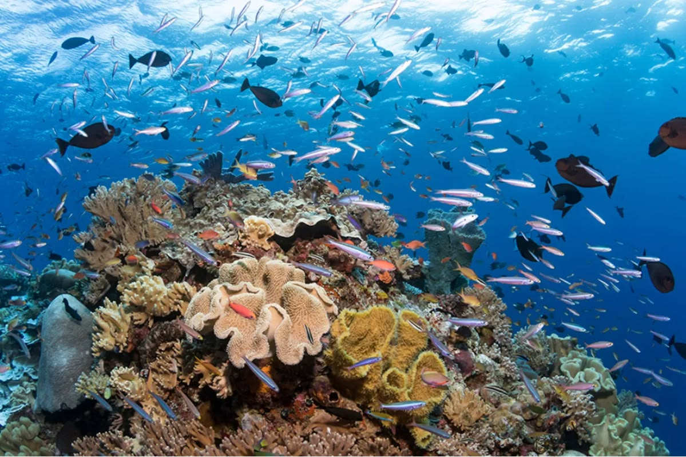
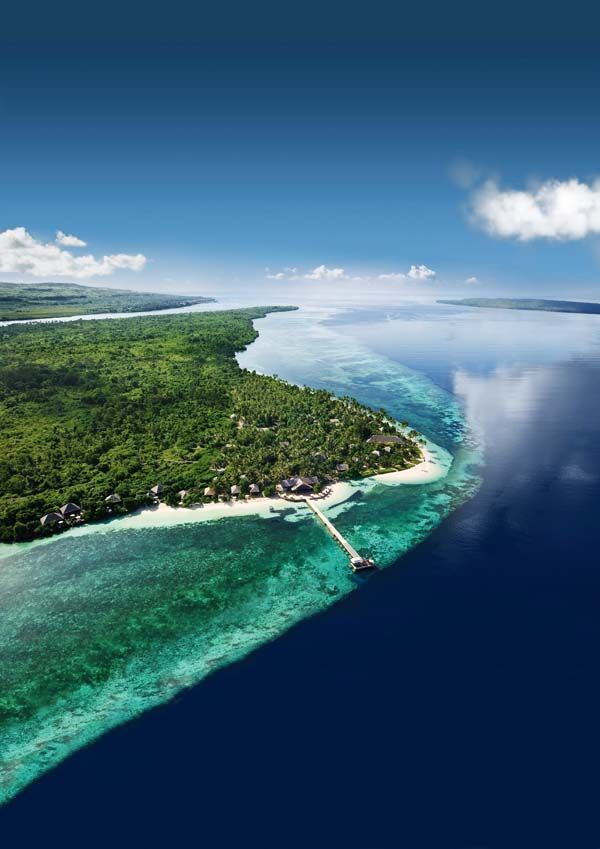
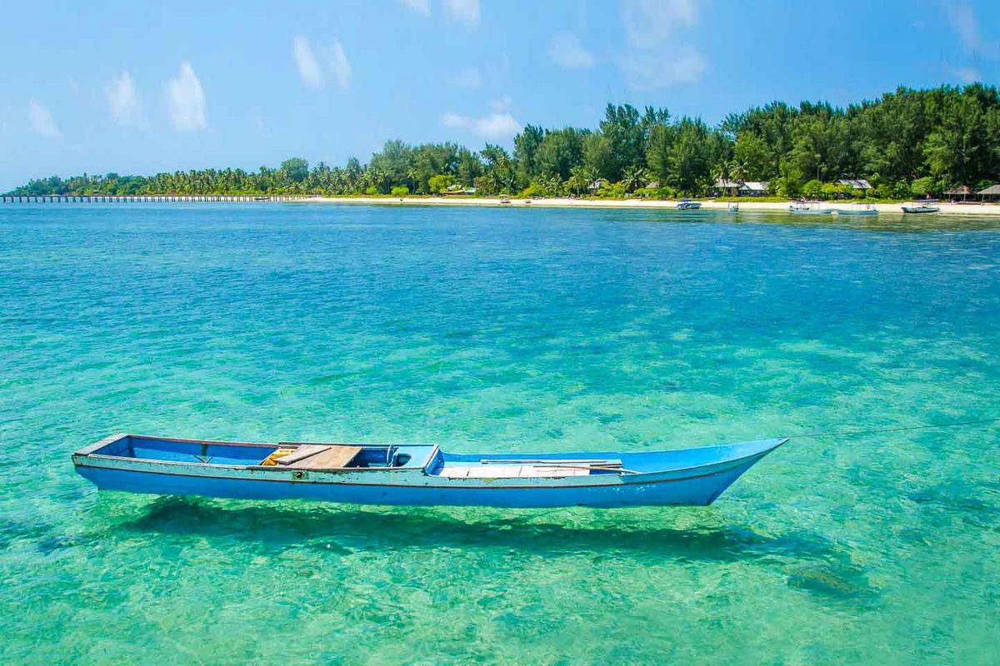
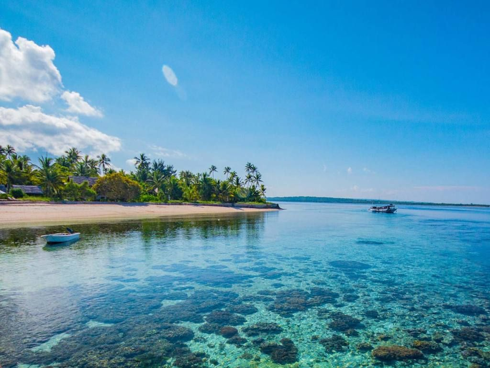
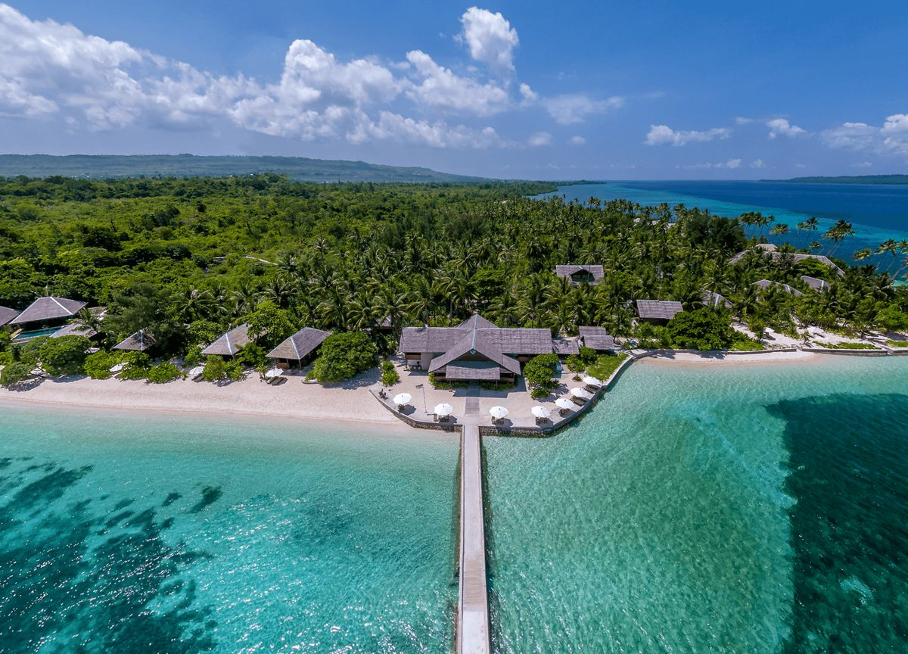
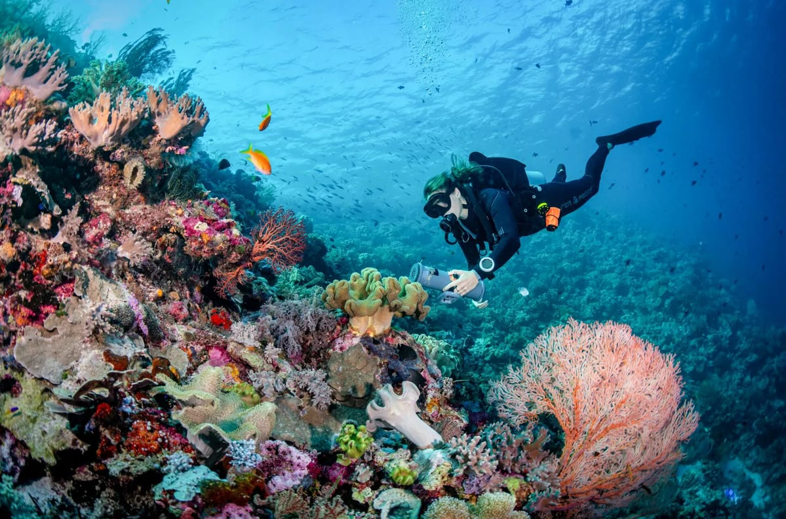
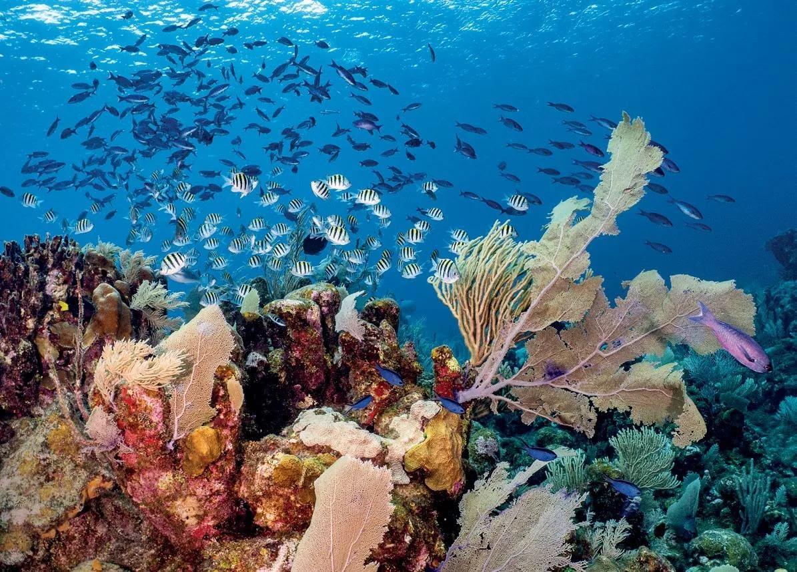
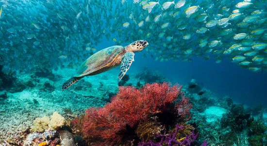

Wakatobi merupakan salah satu kawasan bahari unggulan Indonesia yang terletak di Provinsi Sulawesi Tenggara. Nama Wakatobi berasal dari gabungan empat pulau utama, yaitu Wangi-Wangi, Kaledupa, Tomia, dan Binongko. Kawasan ini dikenal dengan keanekaragaman terumbu karang, ikan tropis, serta ekosistem laut yang menjadi bagian penting dari kekayaan alam Nusantara.
Keindahan Wakatobi tidak hanya terletak pada dunia bawah lautnya, tetapi juga pada kehidupan masyarakat pesisir yang erat dengan tradisi bahari. Pengetahuan lokal mengenai laut, aktivitas nelayan, serta budaya masyarakat setempat menjadi bagian dari warisan yang terus dijaga dari generasi ke generasi.


Wakatobi memiliki sejarah panjang yang erat kaitannya dengan kehidupan masyarakat kepulauan dan tradisi maritim. Jauh sebelum dikenal sebagai destinasi bahari, wilayah ini telah menjadi tempat tinggal masyarakat yang menggantungkan kehidupan pada laut, membangun hubungan antarpulau, serta mewariskan pengetahuan tentang lingkungan sekitarnya.
Kehidupan budaya Wakatobi juga dipengaruhi oleh interaksi antarmasyarakat di kawasan Sulawesi Tenggara dan wilayah sekitarnya. Tradisi pelayaran, adat istiadat, bahasa, serta keterampilan lokal berkembang menjadi bagian dari identitas masyarakat yang tetap dijaga hingga kini.
Nama Wakatobi sendiri berasal dari gabungan nama empat pulau utama, yaitu Wangi-Wangi, Kaledupa, Tomia, dan Binongko. Keempat pulau ini memiliki karakter dan kekayaan lokal yang beragam, membentuk warisan alam dan budaya yang menjadi bagian penting dari Nusantara.
Inspirasi




